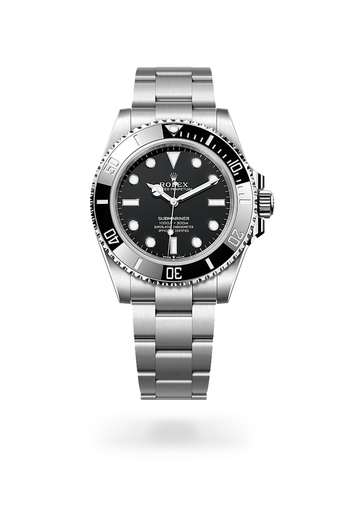
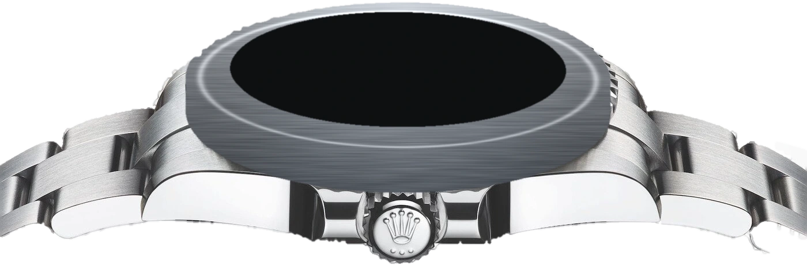
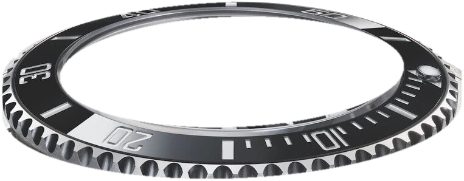
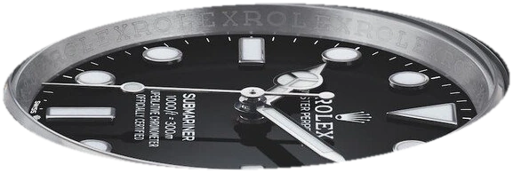

Oyster Perpetual · Submariner
El tiempo,
en su elemento.
La profundidad de un icono. La precisión de cada detalle. Una presencia que trasciende la superficie.

Oyster Perpetual · Submariner
La profundidad de un icono. La precisión de cada detalle. Una presencia que trasciende la superficie.
CARACTERÍSTICAS
Fabricada en acero Oystersteel en sus versiones estándar, y también en otros materiales como oro y Rolesor.
El Submariner Date usa el calibre 3235. Reserva de marcha de aproximadamente 70 horas.
Bisel giratorio unidireccional con disco Cerachrom graduado en 60 minutos para controlar el tiempo de inmersión.
Resistente al agua hasta 300 metros (1.000 pies) gracias a su caja Oyster y la corona Triplock.
Con cierre de seguridad Oysterlock y sistema de extensión Rolex Glidelock.



VISTA INTERACTIVA
Conoce por completo el Submariner Date con nuestro modelo 3D
LA COLECCIÓN
ESTE MODELOEl Submariner se ofrece en distintos materiales y colores de bisel. Elige un modelo para ver su detalle.
Bisel negro
REF. 124060
Oystersteel, esfera negra y sin fecha. Calibre 3230: el modelo que presenta esta página.
Bisel negro
REF. 126610LN
Oystersteel y esfera negra, con ventana de fecha a las 3 y calibre 3235.
Bisel verde
REF. 126610LV
Oystersteel con bisel Cerachrom verde y esfera negra.
Bisel azul
REF. 126619LB
Oro blanco de 18 quilates, bisel Cerachrom azul y esfera negra.
Bisel azul · Rolesor
REF. 126613LB
Rolesor amarillo (Oystersteel y oro amarillo), con bisel y esfera azules.